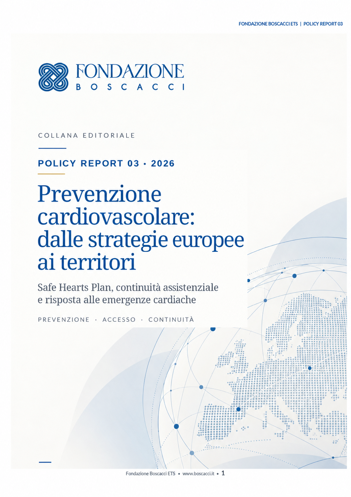

Policy Report 03 · Ottobre 2026
Prevenzione cardiovascolare: dalle strategie europee ai territori
Safe Hearts Plan, continuità assistenziale e capacità di risposta alle emergenze cardiache. Un’agenda di attuazione con dati europei, proposte territoriali e indicatori di valutazione, sviluppata a partire dai temi dell’incontro del 17 marzo 2026 al Parlamento europeo.